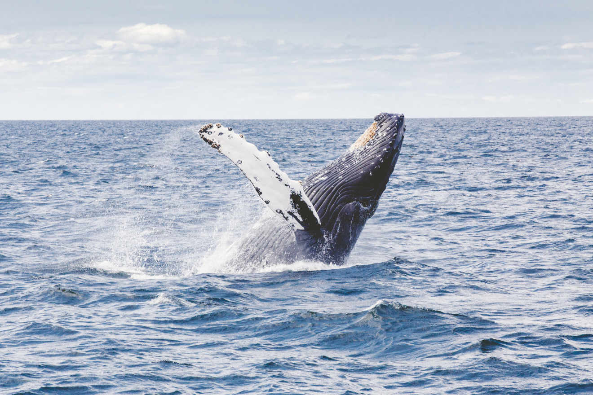

Photo via Unsplash
This Week in Genesis, we’re kicking January’s butt with fresh design inspiration in the showcase, Genesis theme sales to give your site a new look, plus, what to do if media uploads are not working for you in WordPress in 4.7.1.
Themes
Susanta Sahoo launches a new Genesis theme, Sleek Pro, and he’d love your feedback.
What better way to start the year than a with a new look for your site?
Jamie Mitchell’s two fantastic Genesis themes, Harmony Pro and Local Business Pro are currently on sale.
Hey Look, two AWESOME #genesiswp themes on sale —> https://t.co/h0Mz1fZ5xx #wordpress #blogging #smallbusiness
— Jamie Mitchell (@jamiejmitchell) January 12, 2017
Plus, Appfinite are still having a buy one get one free sale.
Does your site use the Genesis Framework? Now is an excellent time to grab 2 #WordPress Themes for the price of One! https://t.co/Ql5uekhqOZ pic.twitter.com/7SbcrxaDjI
— appfinite (@appfinite) January 3, 2017
Showcase
Great use of Workstation Pro* from Ole Rauch for organizi.ng
Check out this new website I built using #genesiswp and #workstationpro: https://t.co/1Wtu8doxVm
— Ole Rauch 🔴 (@olerauch) January 10, 2017
Kristie Hill with a customisation of the Glam theme* for this great looking site for postcardstoseattle.com
Just set up a new theme for @pstcrds2seattle using @restored316's #genesiswp theme GLAM https://t.co/72rqrWfbud check it out.
— Kristie Hill (@blogambitions) January 14, 2017
A colourful site from Justin McGuire for thepaintfactorymn.com
So happy to see this great local company get a great new look for their site! #GenesisWP #TeamVivid https://t.co/LzXFftmwZs pic.twitter.com/rebjGz0mUQ
— Justin McGuire (@jemcgui) January 13, 2017
Stephanie Hellwig for magnoliajamesbridal.com
I just love how this #bridal #shop #WordPress #genesiswp #Website turned out! #mobileresponsive https://t.co/JIWk7fY6KS pic.twitter.com/CDF5UtlhRA
— Stephanie Hellwig (@stephanehellwig) January 14, 2017
Pin Oak Web Designs for phoenixhomehc.com
New #WordPress site with #genesiswp framework by Pin @PinOak . https://t.co/dkeFaLxqsB pic.twitter.com/VLgf2WqfOv
— Pin Oak Web Designs (@PinOak) January 11, 2017
Dragan Palla with a new website for photographer Via Kjaer, ivakjaerphotography.com
Created new website for a photographer Iva Kjaer from Denmark https://t.co/LwiSkHaupk. Works really good with Genesis #genesiswp
— Dragan Palla (@Domainsflow) January 11, 2017
Pilcrow Pixel for sarahmooney.co.uk
We’ve just launched a new for professional storyteller Sarah Mooney. See https://t.co/WTsGiK2acL #genesiswp #WordPress
— Pilcrow + Pixel (@PilcrowPixel) January 11, 2017
Best of the rest
Omar Al-Ansari shows you how to create related posts in Genesis using Advanced Custom Fields.
Sridhar Katakam on full-width author box, after entry, adjacent entry navigation and comments in Genesis…
Repositioning author box, after entry, adjacent entry navigation and comments in Genesis:https://t.co/lGjVNjZ6oh#GenesisWP pic.twitter.com/TZjNFKc5y8
— Sridhar Katakam (@srikat) January 13, 2017
…and how to prevent Genesis Responsive Slider’s CSS and JS files from loading sitewide.
How to prevent Genesis Responsive Slider's CSS and JS files from loading sitewide:https://t.co/2O4gh8rkio#GenesisWP
— Sridhar Katakam (@srikat) January 13, 2017
And finally…
If you’re having any issues uploading files in WordPress after updating to WordPress 4.7.1, the Disable Real MIME Check plugin will fix your issue until WordPress 4.7.2 is available (h/t Susan Ramsey).
If you're trying to import a .wie or .json file to your #GenesisWP #WordPress site, you'll need this plugin: https://t.co/bqfudHbtz0
— Susan Ramsey (@onehappystudio) January 14, 2017
—
That’s all for this week.
Got something great to share for next week? Add it! Don’t want the heartache of missing out on a future issue? Subscribe!
Until next time, let’s keep Genesis awesome.